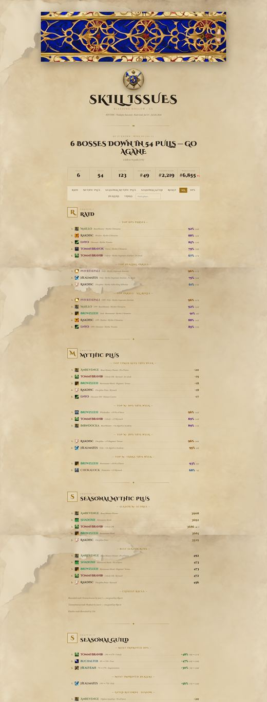

Every layout paired with every theme. Layout is the structure; theme is the paint. Both are picked in theme.yml — board.web_layout and the colors/art blocks. Resize the window (or open on your phone) to see the reflow.
board.web_layout
